The following tips and tricks give some helpful ideas for increasing your
productivity.
| Now, where was I? |
Workbench editors keep a navigation
history. If you open a second editor while you're editing, you
can press Navigate > Backward (Alt+Left Arrow, or the
back arrow
on the workbench toolbar) to go back to the last editor. This makes working with several open editors a whole lot easier. |
|
Finding a string incrementally |
Use Edit > Incremental Find Next (Ctrl+J) or Edit > Incremental Find Previous
(Ctrl+Shift+J)
to enter the incremental find mode, and start typing the string to match.
Matches are found incrementally as you type.
The search string is shown in the status line. Press Ctrl+J or
Ctrl+Shift+J to go to the next or previous match. Press Enter or Esc to
exit incremental find mode.
|
| Go to last edit location |
Navigate > Go
to Last Edit Location (Ctrl+Q) takes you back to
the place where you last made a change. A corresponding button marked
is shown in the toolbar. If this toolbar button does not appear in your perspective, you can
add it by selecting Window > Customize Perspective > Other >
Editor Navigation. |
|
Show ancestor pane in 3-way compares
|
Whenever a CVS synchronization results in a conflict, it is helpful
to view the common ancestor on which the two conflicting versions are based.
You can view the common ancestor by toggling the Show Ancestor Pane
button in the compare viewer's local toolbar.
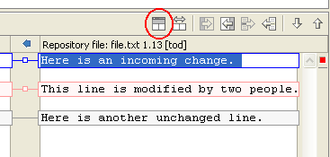
If you always want to have the ancestor pane open automatically for conflicts,
you can check the option Initially show ancestor pane on the
Text Compare tab of the Compare/Patch preference page.
|
| Replace from Search view
|
You can replace the matches in the files by using Replace... or Replace
Selected... from the context menu in the Search view. |
| Merge in Compare editor

|
You can merge incoming changes in the compare editor with one click. Hover over the small square in the middle of the line connecting two ranges of an incoming or conflicting change. A button appears that allows you to accept the change.
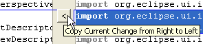
Note that for this the option Connect ranges with single line on the Workbench
> Compare/Patch > Text Compare preference page has to be enabled. |
|
Shortcuts for manipulating lines
|
All text editors based on the
Eclipse editor framework support editing functions, including
moving lines up or down (Alt+Arrow Up and Alt+Arrow Down), copying lines (Ctrl+Alt+Arrow Up and Ctrl+Alt+Arrow Down), inserting
a new line above or below the current line (Ctrl+Shift+Enter and
Shift+Enter), and converting to lowercase or uppercase (Ctrl+Shift+Y
and Ctrl+Shift+X).
|
| Quick Diff: seeing what has changed as you edit
|
Quick Diff provides color-coded change indication while you are typing. It can be turned on for text editors using either the ruler context menu, CTRL+SHIFT+Q or for all new editors on the Workbench
> Editors > Quick Diff preference page. The colors show additions, deletions,
and changes to the editor buffer as compared to a reference, for
example, the contents of the file on disk or its latest CVS revision.

When the mouse cursor is placed over a change in the vertical
ruler, a hover displays the original content, which can be restored using the ruler's context
menu. The context menu also allows you to switch between the references and
enable/disable Quick Diff. |
| Customizing the presentation of
annotations
|
You can customize the presentation of annotations in editors on the Workbench
> Editors > Annotations preference page:
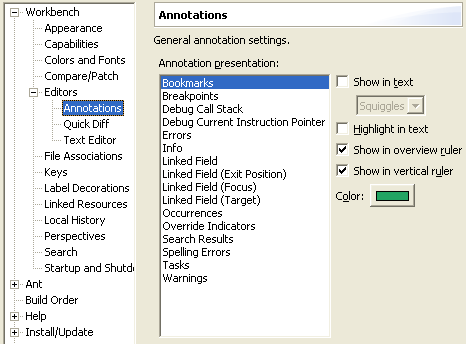
|
Managing screen real estate
with fast views |
Use fast views to free up screen
real estate while keeping views easily accessible. Clicking on the icon
for a fast view temporarily reveals it over top of the other views. The
fast view retracts as soon you click outside of it. The Fast View
command in the view's system menu toggles whether it is a fast view. You
can also create a fast view by dragging a view onto the shortcut bar at
the left. |
| Opening editors using drag and
drop |
You can open an editor on an item
by dragging the item from a view like the Navigator or Package Explorer
and dropping it over the editor area. |
| Restoring deleted resources |
Select a container resource and
use Restore from Local History to restore deleted files. You can
restore more than one file at one time.
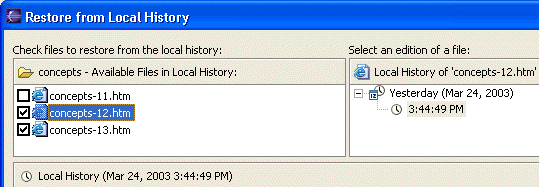 |
| Like to start afresh each session? |
A setting on the Workbench >
Editors preference page closes all open editors automatically whenever
you exit. This makes start-up cleaner and a bit faster. |
| Better UI for editor / view
synchronization |
The Navigate > Show In
command provides a uniform way to navigate from an open editor to a view
showing the corresponding file (e.g., in the resource Navigator view), or
from a file selected in one view to the same file in a different view (e.g.,
from the resource Navigator view to the Packages Explorer view).
Typing Alt+Shift+W opens a shortcut menu with the available view
targets.
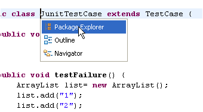
|
User customizable
key bindings |
If you find yourself repeatedly
doing some command, you might be able to streamline things by assigning
a key sequence to trigger that command. Assigning new key bindings, and
viewing existing bindings, is done from the Workbench > Keys preference
page.
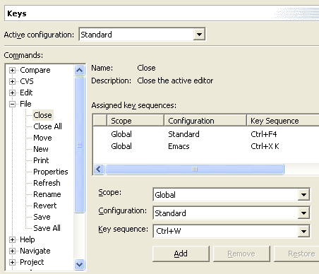 |
| Faster workspace navigation |
Navigate > Open Resource
(Ctrl+Shift+R) brings up a dialog that allows you to quickly locate and
open an editor on any file in the workspace. In the same vein, Navigate
> Go To > Resource expands and selects the resource in the Navigator
view itself, if it has focus. |
| Tiling the editor work area |
You can use drag and drop to modify
the layout of your editor work area. Grab an editor tab and drag it to the
edge of the editor work area. The arrow dock icons (e.g.,  )
indicate which way the editor work area will split. )
indicate which way the editor work area will split.
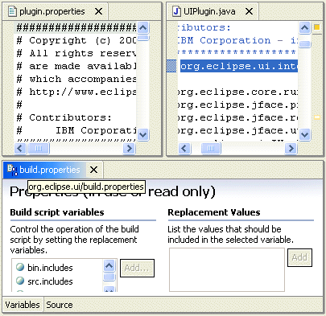 |
| Now where was I? |
Workbench editors keep a navigation
history. If you open a second editor while you're editing away, you
can press Navigate > Backward (Alt+Left Arrow, or the
back arrow on the workbench toolbar) to get back. This makes working with
lots of open editors a whole lot easier. |
| Incrementally find a string
|
Use Edit > Incremental
Find Next (Ctrl+J) or Edit > Incremental Find Previous
(Ctrl+Shift+J) to enter incremental find mode, and start typing the string
to match. Matches are found incrementally as you type. The search string
is shown in the status line. Press Ctrl+J or Ctrl+Shift+J to go to the next
or previous match. Press Enter or Esc to exit incremental find mode. |
| Go to last edit location |
Navigate > Go to Last Edit
Location (Ctrl+Q) takes you back to the place where you last made a
change. A button marked
shows up in the toolbar when the Editor Navigation command is enabled. If
this command does not appear in your perspective, you can add it by selecting
Window > Customize Perspective > Other > Editor Navigation. |
| Linking view to current open
editor |
The resource Navigator view
(and similar views) is not tightly linked to the currently open editor
by default. This means that closing or switching editors does not change
the selection in the Navigator view. Toggling the Link with Editor
button in the Navigator view toolbar ties the view to always show the
current file being edited.
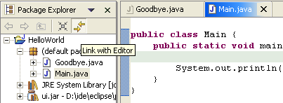 |
| Copying and moving resources |
You can drag and drop files and
folders within the Navigator view to move them around. Hold down the Ctrl
key to make copies. |
| Importing files |
You can quickly import files and
folders into your workspace by dragging them from the file system (e.g.,
from a Windows Explorer window) and dropping them into the Navigator view.
The files and folder are always copied into the project; the originals are
not affected. Copy and paste also work. |
| Exporting files |
Dragging files and folder from the
Navigator view to the file system (e.g., to a Windows Explorer window) exports
the files and folders. The files and folder are always copied; workspace
resources are not affected. Copy and paste also work. |
| Global find/replace
|
Use Search > File
from the main menu to search for text which should be replaced. In the Search
view, select the entries that need to be replaced and choose Replace
Selected from the context menu.. |
| Collapsing all open items |
Use the Collapse All button
on the toolbar of the Navigator view (and similar views) to collapse all
expanded project and folder items.
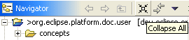
|
| Open editors with a single click |
Use the Open mode setting on the
Workbench preference page to activate single click opening for editors.
In single click mode, a single click on a file in the Navigator view (and
similar views) selects and immediately opens it. |
| Next / previous navigation |
You can use Ctrl+. and Ctrl+, to
navigate to the next or previous search match, editor error, or compare
difference. These are the shortcut keys for Navigate > Next and
Navigate > Previous. |
| Describing your configuration |
When reporting a problem, it's often
important to be able to capture details about your particular setup. The
Configuration Details button on the Help > About Product
dialog opens a file containing various pieces of information about your
setup, including plug-in versions, preference settings, and the contents
of the internal log file. You can save this, and attach the file to your
problem report. |
| Workspace project management |
Use the Project > Close Project
command to manage projects within your workspace. When a project is closed,
its resources are temporarily "offline" and no longer appear in
the Workbench (they are still sitting in the local file system). Closed
projects require less memory. Also, since they are not examined during builds,
closing a project can improve build times. |
| Restoring a perspective's layout |
Rearranging and closing the views
in a perspective can sometimes render it unrecognizable and hard to work
with. To return it to a familiar state, use Window > Reset Perspective.
|
| Pinning editors |
When the Close editors automatically
preference is active (found on the Workbench > Editors preference
page), you can stop an editor from being closed by using the Pin Editor
button which appears in the workbench toolbar.
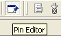 |
| Importing an existing project |
If you import an existing project,
the resources files for the project are not copied. If you check
the properties of the project, you'll see that the project's location in
the file system is the location you specified. |
| Reordering editor tabs |
You can rearrange the order of open
editors by using drag and drop. Grab the editor tab and drag it to the position
you want the editor to appear. When positioning editors, the stack icon
 indicates a valid spot to drop.
indicates a valid spot to drop. |
| Deleting completed tasks |
Use the Delete Completed Tasks
command in the Task view context menu to remove all completed tasks from
the Tasks view. This is more convenient than individually selecting and
deleting completed tasks. |
| Quick navigation between views,
editors and perspectives |
A look at the Window > Navigation
menu reveals a number of ways to quickly navigate between the various views,
editors, perspectives, and menus in the workbench. These commands have keyword
accelerators such as Ctrl+F6 for switching between editors, Ctrl+F7
for switching between views, Ctrl+F8 for switching between perspectives,
and F12 for activating the editor.
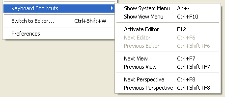
To directly navigate to a particular view you can define a keyboard
shortcut to a view via the Workbench > Keys preference page. |
| Maximizing a view or editor |
You can maximize a view or editor
by double-clicking on the view's title bar or the editor's tab. Double-click
again to restore it to its usual size. |
| Viewing resource properties |
Use the Properties view (Window
> Show View > Properties) when viewing the properties for many
resources. Using this view is faster than opening the Properties dialog
for each resource.
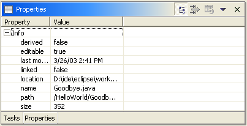 |
| Quickly find a resource |
Use the Navigate > Go To >
Resource command to quickly find a resource. If the Go To > Resource
command does not appear in your perspective, you can add it by selecting
Window > Customize Perspective > Other > Resource Navigation. |
| Extra resource information |
Label decorations are a general
mechanism for showing extra information about a resource. Use the Workbench
> Label Decorations preference page to select which of the available
kinds of decorations you want to see. |
| Filtering resources |
The Navigator and Tasks views both
support filtering of their items. You control which items are visible by
applying filters or working sets. The Filters commands are found
on the view menu. The working set is selected using the Select Working
Set command in the Navigator view menu. In the Tasks view, a working
set can be selected from within the Filters dialog. |
| Customizing toolbar and menu
bar |
You can customize which items appear
on the main toolbar and menu bar using the Window > Customize Perspective
command.
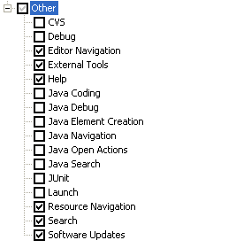 |
| Quick fix in Tasks view |
You can use the Quick Fix
command in the Tasks view to suggest an automatic fix for the selected item.
The Quick Fix command is only enabled when there is a suggested fix. |
| Creating path variables |
When creating a linked folder or
file, you can specify the target location relative to a path variable. By
using path variables, you can share projects containing linked resources
without requiring team members to have exactly the same path in the file
system. You can define a path variable at the time you create a linked resource,
or via the Workbench > Linked Resources preference page.
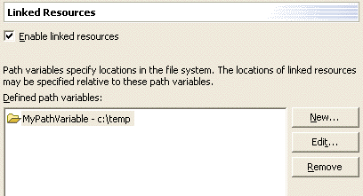 |
| Comparing zip archives
with each other or with a folder |
Select two zip archives or one
archive and a folder in the resource Navigator view and choose Compare
With > Each Other from the view's popup menu. Any differences
between the two inputs are opened in a Compare editor. The top pane shows
all the archive entries that differ. Double clicking on an item performs
a content compare in the bottom pane.
This works in any context where a file comparison is involved. So if
a CVS Synchronize operation lists an archive in the resource tree, you
can double click on it in order to drill down into changes within the
archive. |
| Switch workspace |
Instead of shutting down eclipse and restarting
with a different workspace you can instead use the
File > Switch Workspace.
This trick is also useful when you change
certain preferences that require a restart to take effect (such as the
Workbench > Appearance Presentation preference). To restart quickly
simply switch workspaces to your current workspace.
|
| Ctrl-e Editor List |
You can quickly switch editors using
the Ctrl+e keybinding which opens a list of all open editors. The list supports
type-ahead to find the editor as well as allows you to close editors using
a popup menu or the Delete key. |
| View Minimizing |
Running out of space? Try minimizing
your unused views to reclaim screen real-estate. Each view stack contains
a minimize icon along side the maximize icon.
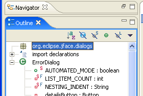 |
| Detached Views |
In 3.0 it's possible to dock a view
in its own window, seperate from the workbench window. To do so, simply
drag a view outside of the workbench window. To return it to the workbench
window, drag it back. |
| Fast Views and the Perspective
Bar |
The fast view and perspective bars
are independant entities in 3.0 and they may be docked independant of one
another.
By default the Perspective Bar is located in the upper right hand corner
of the screen. It may also be docked on the top left, under the main toolbar
or to the far left. It may be moved via the perspective bar context menu
or via the Workbench > Appearance preference page.

By default the Fast View Bar is located in the bottom left hand corner
of the screen. Like the Perspective Bar, it may be docked elsewhere. This
may be done by dragging the area to either the left or right side of the
screen (or back to the bottom if it is already in one of these positions).
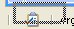 |
| Key Binding Assistance |
Eclipse supports key bindings
that contain more than one key stroke. Examples of such key bindings are
"Ctrl+X S" ("Save" in the Emacs key configuration) or "Alt+Shift+Q Y"
("Open Synchronize View" in the Default key configuration). It is hard
to learn these keys, and it can also be hard to remember them if you don't
use them very often. It is now possible to get a little pop-up showing
you the possible completions for the keys you have pressed already.
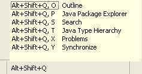
In the preferences, under Workbench > Keys, there is
an "Advanced" tab. Go to this tab, and check "Help Me With Multi-Stroke
Keyboard Shortcuts". |
| Always Run in Background |
In Eclipse 3.0 many operations can be optionally
run in the background so that you can continue working while they complete.
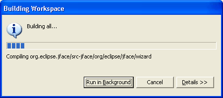
In the Workbench preference page you can choose to always run in background
so that you never get the initial dialog for these operations.
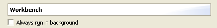 |
| Disabling Unused Capabilities |
If there are parts of the Eclipse Platform that you never use
(for instance, you don't use CVS repositories or you don't develop Plug-ins) it's possible that you
can disable them from the UI entirely. Segments of the Workbench that may be filtered can be found in
the Workbench > Capabilities preference page. By disabling capabilities you are able to hide
views, perspectives, preference pages and other assorted contributions.
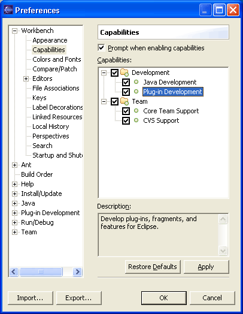
|
| CVS Watch/Edit |
The "edit" portion of
CVS Watch/Edit is now supported. Through settings on the
Team > CVS > Watch/Edit preference page (which must be set
before the projects are added to your workspace), you can choose to automatically
notify the CVS server whenever you start to edit a file. In turn, the CVS
server will notify others on the watch list for that file. When you go to
edit a file, you are warned if there are others editing the same file. Team
> Show Editors on a file's context menu lists everyone currently
working on the file. There are also Team > Edit and Unedit
commands. |
| Working set for imported team
projects |
There is an option to create
a working set for projects imported into the workspace via Import >
Team Project Set. This works for all types of repositories.
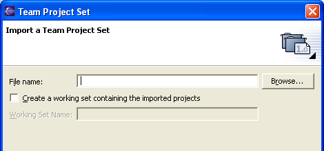 |
| CVS now supports working sets |
Users can now define working sets
which will limit the number of projects shown in the CVS Repositories view. |
| Comparing different versions |
Select any folder or file in the
CVS Repositories view and choose Compare With from context menu to
compare it against another version, branch, or date. |
| Restoring deleted files from
CVS |
Deleted files can now be queried
and restored from the CVS repository using the Team > Restore from
Repository command, which is available on CVS projects and folders. |
| Pin a Synchronization
|
You can now have multiple synchronizations
defined and available in the Synchronize View. Use the pin toolbar button in the
Synchronize View to pin a synchronization. The next time you synchronize a new
synchronization will be created. This way you can synchronize different sets
of resources. |
| Checkout Wizard
|
You can now checkout projects in one
easy step via the File > Import > Checkout projects from CVS wizard. This
also allows checking out projects from a CVS server that doesn't support browsing
of its contents. |
| Browsing changes by CVS commit set
|
You can browse a set of changes shown
in the Synchronize View grouped logically by author, comment, and date. Enable the
layout via the view's dropdown menu Layout > Commit Sets. This layout
can be used when merging, synchronizing, and comparing. |
| Schedule a synchronize
|
You can schedule that a certain synchronization
run periodically. You can schedule any CVS synchronization from within the Synchronize View via
the Schedule... action in the view's dropdown menu. |
| Want to release changes to an existing branch
|
If you have changes in your workspace that
you would like to commit to another branch than the one currently connected to, you can
run the Team > Update command and switch to another branch. This operation won't modify
the changed files and you can then commit them to the other branch. |
| Schedule a synchronize
|
You can schedule that a certain synchronization
run periodically. You can schedule any CVS synchronization from within the Synchronize View via
the Schedule... action in the view's dropdown menu. |
| Sharing your CVS lineup with others |
You can save the list of projects
shared with CVS into a team project set. This provides an easy way of
re-creating your workspace with shared CVS projects.
- Once you have checked out the set of projects from the CVS repository,
select File > Export from the main menu.
- Select Team Project Set from the list and then select
the projects to be exported. The generated file can be shared with your
team to allow quick setups of your development environment.
- To import the project set select File > Import
and select Team Project Set. The projects will be checked
out of CVS and a repository location will automatically be created.
|
| Reverting a managed CVS file that was
edited, but not committed |
There are a two ways of doing
this:
- Select the file and from the context menu select Replace With >
Latest from HEAD.
or
- Select the file or a parent folder and from the context menu select
Team > Synchronize with Repository.
- Next switch to incoming/outgoing mode using the toolbar button in
the view.
- Select the file and from the context menu select Override
and Update.
|
|
Show ancestor pane in 3-way compares
|
Whenever a CVS synchronization results in a conflict, it is helpful
to view the common ancestor on which the two conflicting versions are based.
You can show the common ancestor by toggling the Show Ancestor Pane
button in the compare viewer's local toolbar.
If you always want to have the ancestor pane open automatically for conflicts,
you can check the option Initially show ancestor pane on the
Text Compare tab of the Compare/Patch preference page.
|